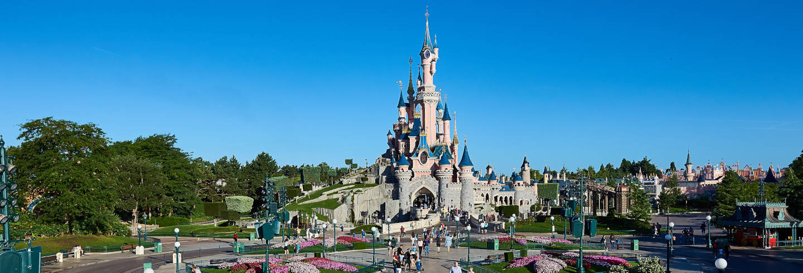

Disneyland París

Disneyland Park o Parc Disneyland es un parque temático de The Walt Disney Company situado en el complejo Disneyland Paris. Es uno de los dos parques pertenecientes al complejo
de París, en Marne-la-Vallée, Francia. Abrió sus puertas el 12 de abril de 1992. El parque temático originalmente fue llamado Euro Disneyland hasta el 1 de octubre de 1994 y Disneyland Paris hasta 2002, cuando adquirió
su nombre actual de Disneyland Park. El nombre Disneyland Paris, anteriormente utilizado para designar a la vez al parque y al complejo, ahora plantea un problema de confusión con el cambio de
nombre del complejo de Disneyland Resort Paris a Disneyland Paris en mayo de 2009. Su estructura está basada en la utilizada por primera vez en 1955 en Disneyland (Anaheim) y más tarde repetida en Magic Kingdom (Bay Lake),
Tokyo Disneyland (Urayasu) y Hong Kong Disneyland (isla Lantau). El parque ocupa una superficie de 57 hectáreas y es el más grande de los Parques Walt Disney del tipo Magic Kingdom.